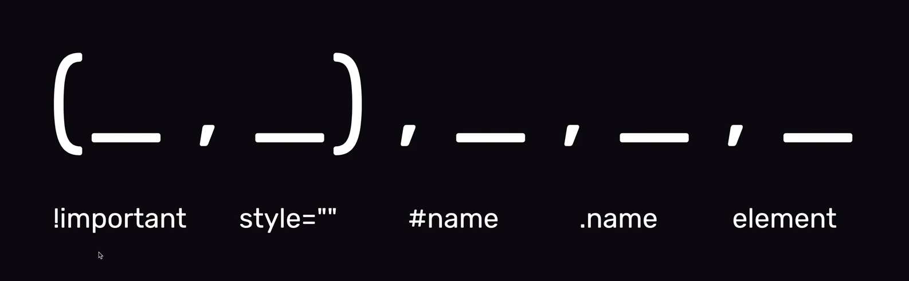

Moduł I
Omówienie czym jest frontend, konfiguracja Visual Studio, warstwy strony internetowej
Warstwy strony internetowej
JavaScript - CSS - HTML - Treść
WTF: Co Ten Frontend to kompleksowe szkolenie z podstaw frontendu. Od totalnego zera. Nie musisz umieć absolutnie NIC! Pod okiem Mistrza Frontendu - Maćka Korsana - nauczysz się podstaw programowania.
Omówienie czym jest frontend, konfiguracja Visual Studio, warstwy strony internetowej
JavaScript - CSS - HTML - Treść
Podstawy HTML, CSS, Devtoolsy, Fromatowanie kodu, Algorytmy, Kanban
<znacznik atrybut="wartość">treść</znacznik>
Semantyczny - mający znaczenie
HTML Validator: https://validator.w3.org/nu/
selektor { właściwość: wartość; }
<link href="style.css" rel="stylesheet" type="text/css">
W devtoolsach w Stylach treść pochyła to domyślne style przeglądarkowe dla danego elementu
Edytowanie na żywo - do znacznika body dodajemy atrybut contenteditable - może być też używane np. do edycji tabel na żywo
skrót: Win - ctrl+Shift+P lub Mac - cmd+Shift+P
w konsole wpisujemy FORMAT DOCUMENT
Jak wyrownywac kod - spacje lub Tab - Indent Using Tabs:2 w konsoli lub na dole - Spaces: / Tab Size. Dla każdego pliku z osobna.
znacznik HTML - główny korzeń, wszystkie znaczniki to węzły - nody, a relacje między nimi to rodzic i dziecko
Trello.com - 3 podziały: TO DO, DOING, DONE. W Doing najlpeiej tylko 1 zadanie, żeby być na nim skupionym.
GIT
GIT - system kontroli wersji
Dla Windowsa trzeba ściągnąć: https://git-scm.com/download/win
Aplikacja desktopowa GitHub Desktop: https://desktop.github.com
W terminalu:
git config --global user.name "Jan Nowak"
git config --global user.email jannowak@gmail.com
Repozytorium = projekt - czyli wszystki pliki naszego projektu
Tworzenie repozytorium: git init czyli inicjalizacja, w katalogu homepage, czyli w konkretnym projekcie
W GitHubDekstop Name to nazwa katalogu w folderze dev, a scieżkę dajemy na /dev bo on sobie znajdzie po nazwie o jaki katalog/projekt chodzi
Stany projektu ktore osiągalismy to commit = stan projektu, zawiera wszystkie zmiany od ostatniej zmiany + dodajemy opis commita, czyli to co sie zmienilo
Do śledzenia zmian w terminalu używamy git status i to robi kolumna Changes w Appce
Do dodania do commita naszych zmian używamy git add .
Do commitowania uzywamy git commit -m "opis zmian"
Jak często commitować? Raczej gdy dodajemy grubą funkcję, dodanie artykułu, a nie poprawienie literówki
Łączenie z GitHubem + Dla terminalowców - tworzy sie repozytorium na stronie a następnie wykorzystuje się komendy na stronie w terminalu, żeby podpiąć repozytorium zdalne do lokalnego
Aby wrzucic kod na GitHuba to w terminalu git push
br to nowa linia
b-pogrubienie, i-kursywa, ale bez znaczenia semantycznego, tylko do wyroznienia
tekstu i tego juz nie robimy bo odpowiadaja za to style CSS, natomiast strong (jak b) i em (jak i) sa lepsze
do wyroznienia jakiegos elementu, nadaja znaczenie
byl tez kiedys tag u to podkreslenie - ale to jak b
i i - nie uzywamy go, to niby do okreslenia nietekstowego bledu
Konstrukcja to: <a href="" target="">opis</a>
a to od anchor, uzywamy do linków i łącz wewnątrz
dokumentu
target to np. _blank
Nawigacja po elementach strony:
<elementid="moj-identyfikator>
i potem <a href="#id>
Jak dodac emoji?
W main nie trzymamy to co bedzie sie wyswietlalo na innych podstronach, wiec wrzucamy header poza main i bedzie on sluzyl do navigacji i footer tez poza main - i wtedy w headerze uzywamy nav. A zeby nie kopiowac tego dla kazdej strony to sa szablony
<img src="" alt=""> mozna na koncu domknac lub nie
Style inline: <znacznik style="color:yellow;">tresc</znacznik> Style inlinowe maja wieksze prawo dzialania niz style w pliku stylow np po id
Atrybut class="smth" do grupowania elementów. Kropka to selektor class
Innym sposobem do grupowania elementow to hash #. Ale to jest id i moze byc tylko jedno id na stronie
Pytanie do czego sie wykorzystuje id?
Reguła o nazwie important - w stylach dajemy np color:blue !important; i to nam nadpisuje style
Pytanie czy important sie stosuje do jednej wlasnosci czy mozna np w paragrafie uzyc tego jakos globalnie ze wszystkie cechy beda important bez pisania tego przy kazdej regule
Łączenie selektorow: w stylach - section a i wtedy wszystkie a w section maja dana wlasnosc lub np klasy my-article p
